Largest city in Wisconsin, is one of the most ethnically and culturally diverse cities in the United States, with its history heavily influenced by German immigrants in the 19th century, and it became well known for its brewing industry
Places to See in Milwaukee
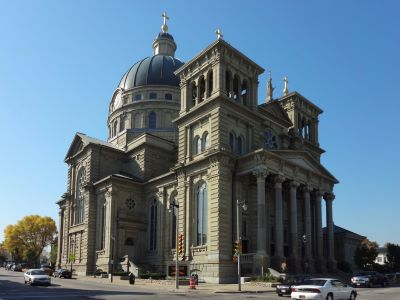
Paul Sableman, CC BY 2.0, via Wikimedia Commons; Image Size Adjusted

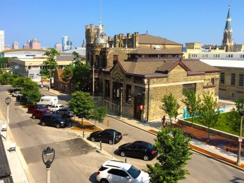
Best Place Pabst, CC BY-SA 4.0, via Wikimedia Commons; Image Size Adjusted

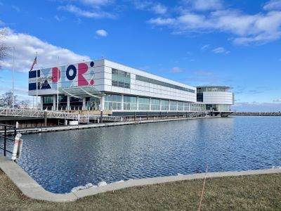
SidewalkMD, CC BY-SA 4.0, via Wikimedia Commons; Image Size Adjusted

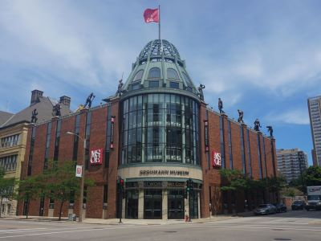
Michael Barera, CC BY-SA 4.0, via Wikimedia Commons; Image Size Adjusted
.jpg){kind=link}
Michael Barera, CC BY-SA 4.0, via Wikimedia Commons; Image Size Adjusted
.jpg){kind=link}
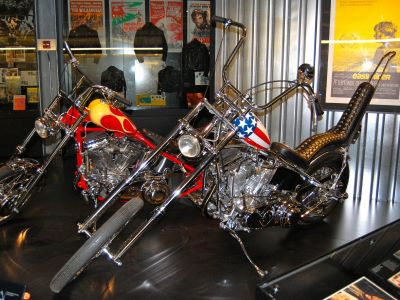
Danemroberts, CC BY-SA 3.0, via Wikimedia Commons; Image Size Adjusted

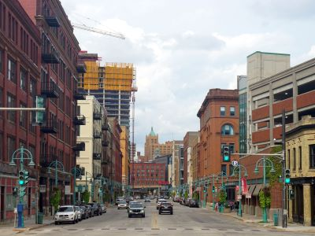
Michael Barera, CC BY-SA 4.0, via Wikimedia Commons; Image Size Adjusted
_(crop).jpg){kind=link}
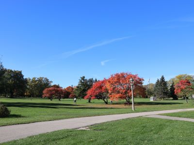
DiscoA340, CC BY-SA 4.0, via Wikimedia Commons; Image Size Adjusted
_11.jpg){kind=link}
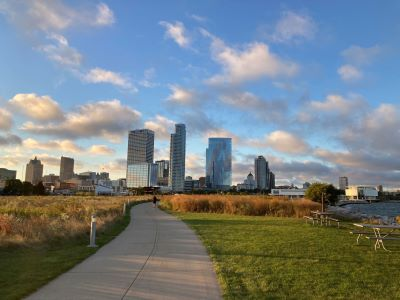
Michael Barera, CC BY-SA 4.0, via Wikimedia Commons; Image Size Adjusted
.jpg){kind=link}
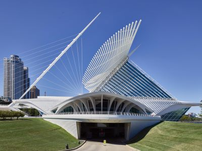
Carol M. Highsmith, CC0, via Wikimedia Commons; Image Size Adjusted

Gillfoto, CC BY-SA 4.0, via Wikimedia Commons; Image Size Adjusted

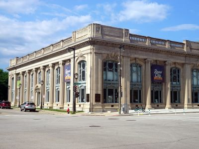
Michael Barera, CC BY-SA 4.0, via Wikimedia Commons; Image Size Adjusted
.jpg){kind=link}
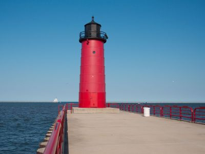
Dori, CC BY-SA 3.0 US, via Wikimedia Commons; Image Size Adjusted

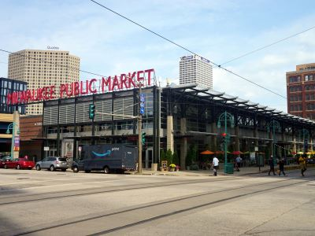
Michael Barera, CC BY-SA 4.0, via Wikimedia Commons; Image Size Adjusted
.jpg){kind=link}
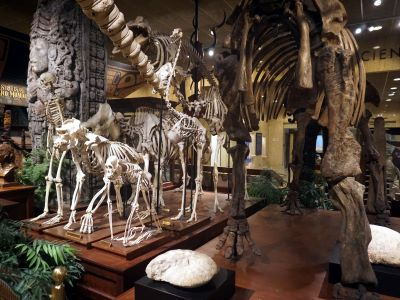
Michael Barera, CC BY-SA 4.0, via Wikimedia Commons; Image Size Adjusted
.jpg){kind=link}
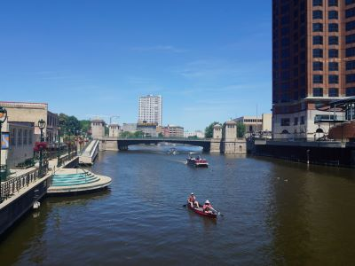
Michael Barera, CC BY-SA 4.0, via Wikimedia Commons; Image Size Adjusted
.jpg){kind=link}
DiscoA340, CC BY-SA 4.0, via Wikimedia Commons; Image Size Adjusted
_01.jpg){kind=link}
_01-400.jpg)
DiscoA340, CC BY-SA 4.0, via Wikimedia Commons; Image Size Adjusted
_01.jpg){kind=link}
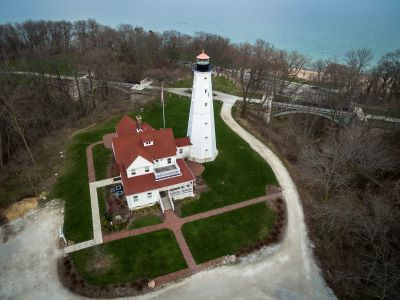
Thatoneguy89, CC BY-SA 4.0, via Wikimedia Commons; Image Size Adjusted

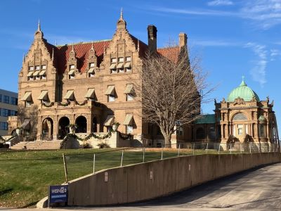
Bmzuckerman, CC BY 4.0, via Wikimedia Commons; Image Size Adjusted
_-_Milwaukee,_WI_-_Frederic_Pabst_Mansion_(1).jpg){kind=link}
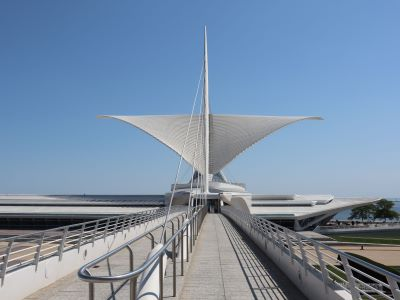
Jules Verne Times Two, CC BY-SA 4.0, via Wikimedia Commons; Image Size Adjusted

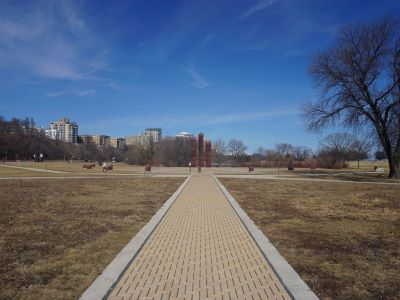
Michael Barera, CC BY-SA 4.0, via Wikimedia Commons; Image Size Adjusted
.jpg){kind=link}
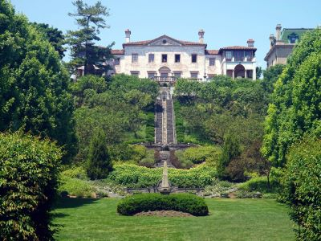
Michael Barera, CC BY-SA 4.0, via Wikimedia Commons; Image Size Adjusted
.jpg){kind=link}
Overview
Milwaukee is the largest city in Wisconsin, on the western shore of Lake Michigan at the meeting of three rivers, the Milwaukee, Menomonee, and Kinnickinnic. It is famous for its brewing heritage, which gave rise to Pabst, Schlitz, and Miller, for Harley-Davidson, which was founded here in 1903, and for Summerfest, one of the largest music festivals in the world. It is also known for its German heritage, its bratwurst, cheese curds, and frozen custard, and its distinctive lakefront architecture.
Visitors come to Milwaukee for the Milwaukee Art Museum with its winged Quadracci Pavilion, the Harley-Davidson Museum, the Milwaukee Public Museum, and the Mitchell Park Domes. They also come for the Milwaukee Riverwalk, the Historic Third Ward, the Milwaukee Public Market, and the Pabst brewery, and Brewers and Bucks games. The city is friendly, affordable, and easy to explore, with a lively summer festival season along the lake.
History
The Potawatomi, Menominee, and Ho-Chunk peoples lived in the area before the French fur trader Solomon Juneau established a trading post in 1818 and became the city's first mayor, and the name comes from an Algonquian word meaning "gathering place by the water." The city was incorporated in 1846, and large numbers of German immigrants arrived after the 1848 revolutions, which gave Milwaukee the nickname "German Athens" and a tradition of breweries, choral societies, and beer gardens. By the late nineteenth century it was a major industrial city, and in the twentieth century it was known for machinery, tanning, and the "sewer socialist" mayors who led the city for much of the early 1900s. The city's lakefront and riverfront have been revitalized since the 1990s.
Sightseeing and Popular Landmarks
The Milwaukee Art Museum, with its Santiago Calatrava-designed Quadracci Pavilion whose "wings" open and close, is the city's best-known landmark, and the Milwaukee City Hall and the Basilica of St. Josaphat are two of its finest historic buildings. The Riverwalk, with its statue of the Fonz, links downtown and the Third Ward, and the Pabst Mansion shows the lifestyle of a beer baron. Other attractions include Discovery World, the Mitchell Gallery of Flight, the North Point Lighthouse, and the Milwaukee Pierhead Lighthouse.
Culture and Museums
The Milwaukee Art Museum has a collection of more than 30,000 works, and the Harley-Davidson Museum covers the history of the company and its motorcycles. The Milwaukee Public Museum has dioramas, a rain forest exhibit, and a butterfly garden, and the Grohmann Museum shows art about work. The Haggerty Museum of Art, the Villa Terrace Museum, and the Milwaukee County Historical Society are among other museums, and the Milwaukee Repertory Theater, the Milwaukee Symphony Orchestra, and the Pabst Theater are cultural institutions. Summerfest, held each summer on the lakefront, features hundreds of acts.
Parks
The Milwaukee County Parks system, designed in part by Frederick Law Olmsted, includes Lake Park, a bluff-top park with a lighthouse, Veterans Park, and Lakeshore State Park, an urban island park on Lake Michigan. The Oak Leaf Trail is a 100-mile network of paths, and the Hank Aaron State Trail connects the lakefront with the Menomonee Valley. Bradford Beach is a popular lakeside beach, and the Mitchell Park Domes, three glass beehive-shaped conservatories, have tropical, desert, and seasonal gardens.
Sports
Milwaukee has two major professional teams. The Milwaukee Brewers of Major League Baseball play at American Family Field, and the Milwaukee Bucks of the NBA, who won the 2021 championship, play at Fiserv Forum. The Green Bay Packers play in nearby Green Bay and have a loyal following in the city.
Seasons and Weather
Milwaukee has a humid continental climate that is moderated by Lake Michigan. Summers are warm and pleasant, with highs in the upper 70s and low 80s°F, and winters are cold and snowy, with highs in the 20s and 30s°F and about 45 inches of snow. Spring can be cool along the lake, and summer and early fall are the best times to visit, with festivals, beer gardens, and outdoor events.
This article uses material from Wikipedia as well as information from official tourism and institutional sources. Key references include Visit Milwaukee, Milwaukee Art Museum, Harley-Davidson Museum, Milwaukee Public Museum, Summerfest, Milwaukee County Parks, Milwaukee Brewers, and National Weather Service Milwaukee. Wikipedia material is from the articles "Milwaukee" and "History of Milwaukee", and is available under the Creative Commons Attribution-Share-Alike License 3.0.
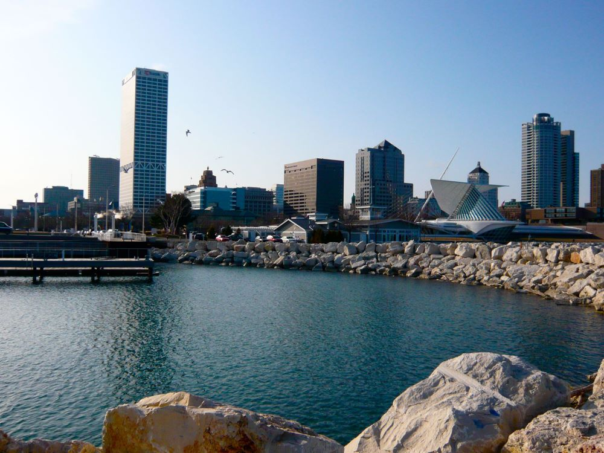

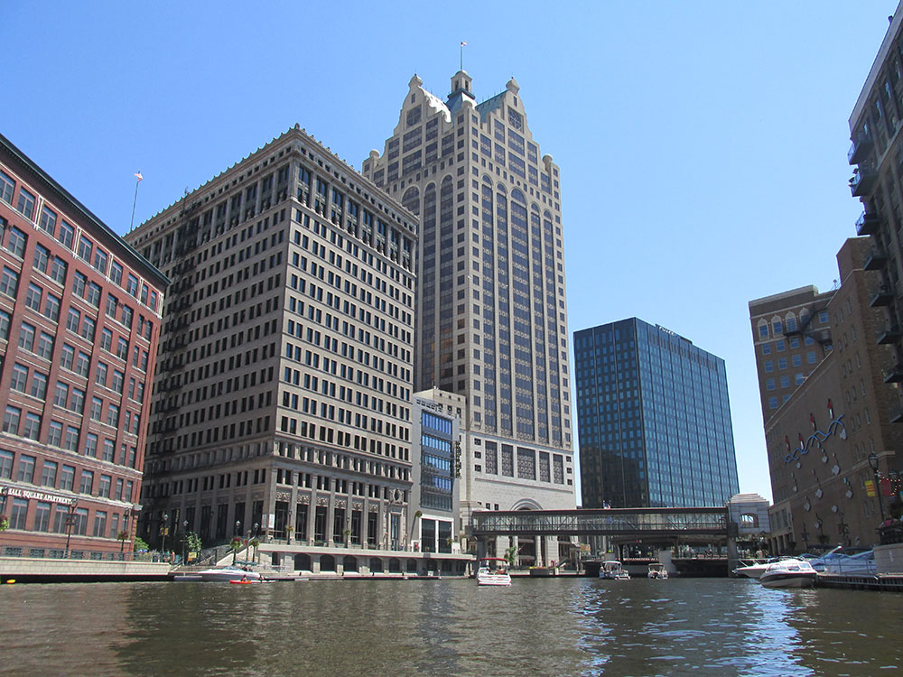

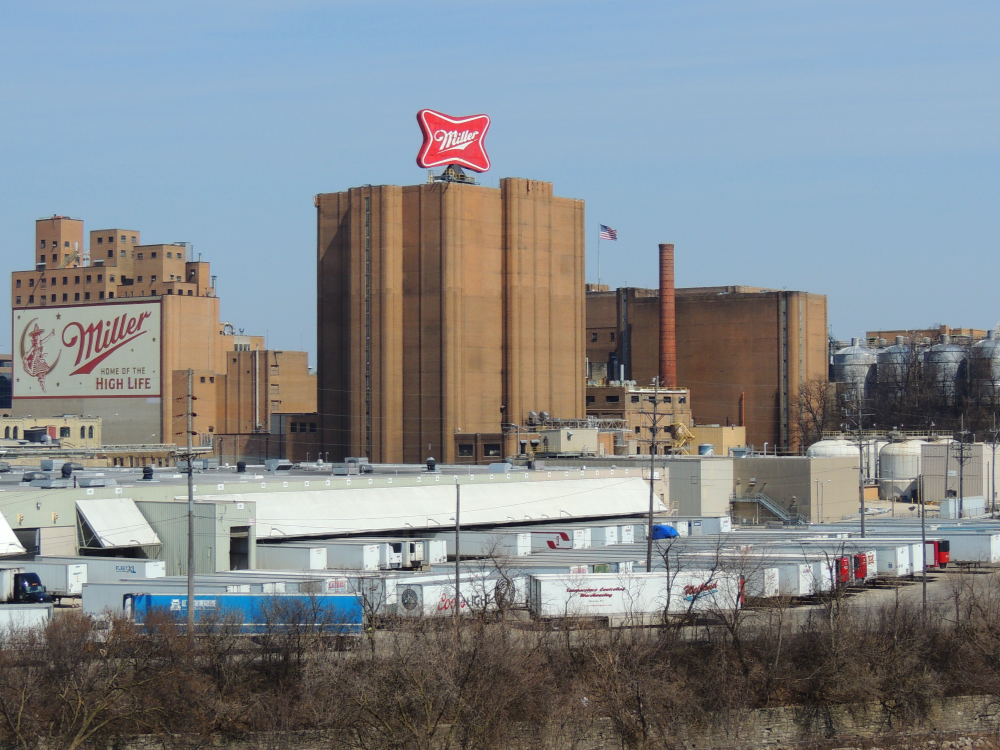

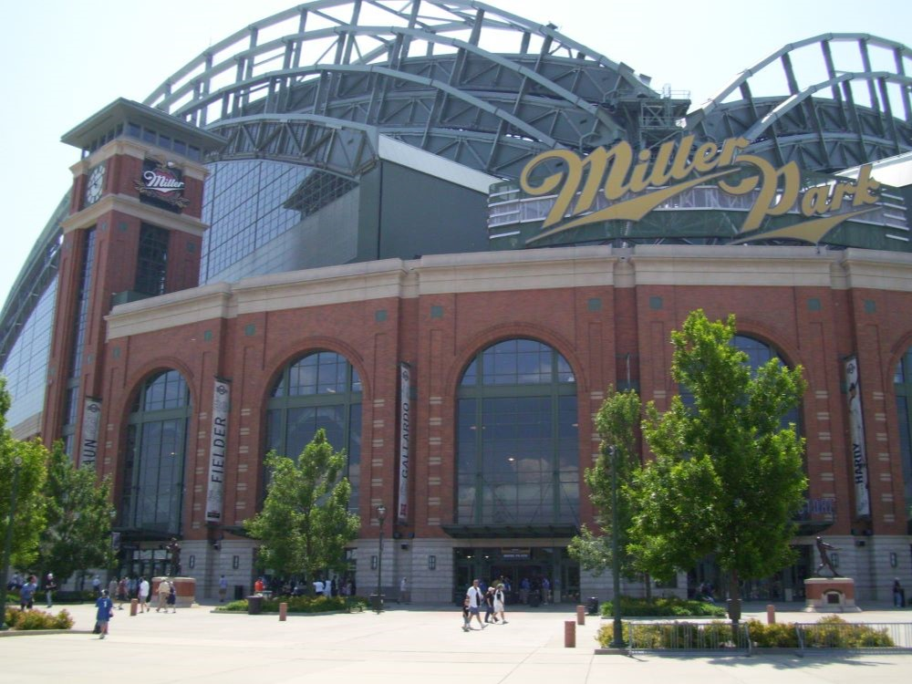

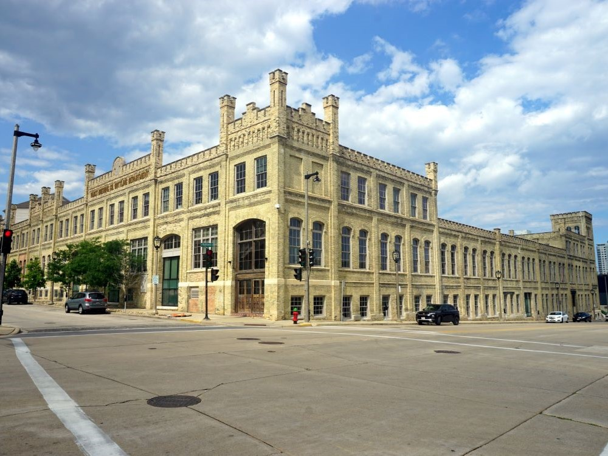
.jpg){kind=link}
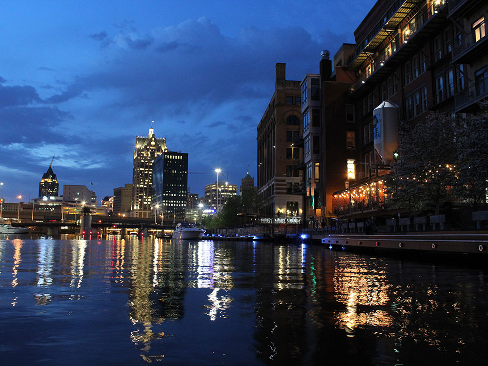
.jpg){kind=link}
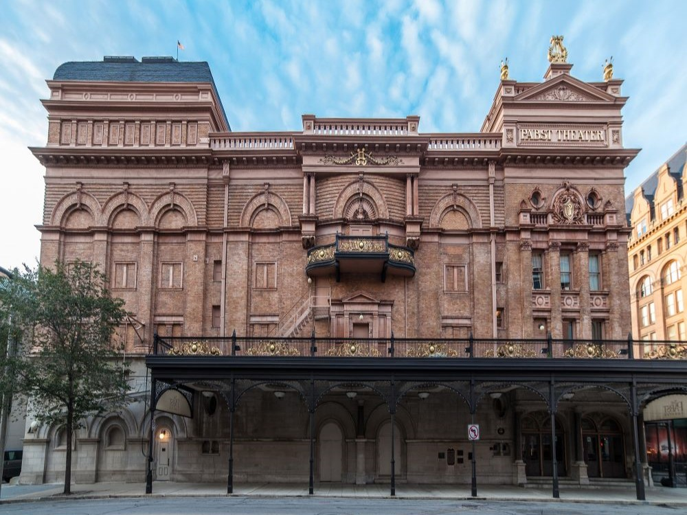

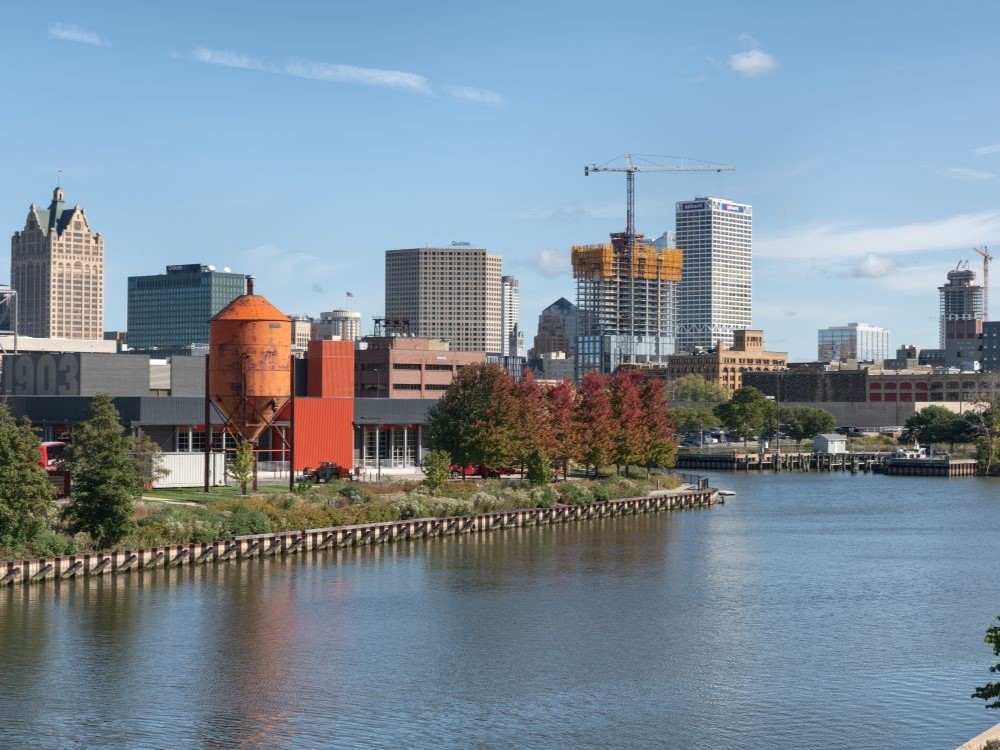